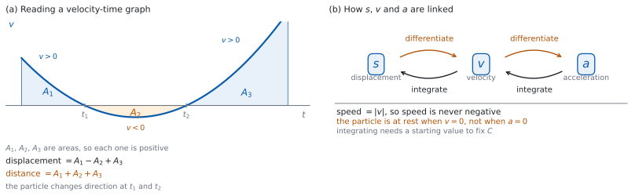

SL 5.9 — Kinematics（運動学）
- displacement \(s\)、velocity \(v\)、acceleration \(a\) の関係を説明できる。
- \(s\) から微分して \(v\)、\(v\) から微分して \(a\) を求められる。
- speed が \(|v|\) であることを知っている。
- 物体が静止する時刻（\(v = 0\)）と、向きが変わる時刻を求められる。
- \(a\) から積分して \(v\)、\(v\) から積分して \(s\) を、はじめの値を使って求められる。
- displacement と total distance travelled を、式で書き分けられる。
- まず式を書いてから、その値を電卓で求められる。
- 単位を正しく書ける。
The idea
1. \(s\)、\(v\)、\(a\)
直線上を動く物体を考えます。 時刻 \(t\) での位置を \(s\) とします。
| 記号 | 名前 | 意味 |
|---|---|---|
| \(s\) | displacement（変位） | 決めた原点からの、符号つきの位置 |
| \(v\) | velocity（速度） | 位置の変化率。符号つき |
| \(a\) | acceleration（加速度） | 速度の変化率。符号つき |
どれも符号つきです。 負の \(s\) は原点の反対側、負の \(v\) は逆向きに動いていることを表します。
2. 微分でつなぐ
\(s\) を微分すると \(v\)、\(v\) を微分すると \(a\) です（図 1 (b)）。
\[ v = \frac{ds}{dt} \tag{1}\]
\[ a = \frac{dv}{dt} = \frac{d^{2}s}{dt^{2}} \tag{2}\]
\(a\) は \(s\) の第 2 次導関数でもあります（SL 5.7）。\(2\) とおりの書き方は、どちらも使われます。
3. speed は \(|v|\)
velocity と speed（速さ）はちがいます。 シラバスは、はっきりこう書いています。
Speed is the magnitude of velocity.
\[ \text{speed} = |v| \tag{3}\]
speed は負になりません。 \(v = -6\) m s\(^{-1}\) なら、speed は \(6\) m s\(^{-1}\) です。
問題文をよく読んでください。 「velocity」と聞かれたら符号つき、「speed」と聞かれたら大きさだけです。
4. 静止と、向きが変わるとき
物体が静止しているのは \(v = 0\) のときです。 \(a = 0\) のときではありません。
向きが変わるのは、\(v\) が符号を変えるところです。 \(v = 0\) を解いて候補を出し、その前後で符号を調べます（SL 5.2）。
\(v = 0\) でも、向きが変わらないことがあります。 \(v\) が \(0\) に触れるだけで、その前後で符号が同じままのときです。だから、\(v = 0\) を解いただけでは足りません。 かならず前後の符号を調べてください。
\(a = 0\) は、その瞬間に速度が変わっていないという意味です。 止まっているという意味ではありません。一定の速度で動きつづけている物体も \(a = 0\) です。
5. 積分でもどる
逆向きには積分します（SL 5.5）。\(a\) から \(v\)、\(v\) から \(s\) にもどれます。
\(C\) を決めるには、はじめの値が要ります。 「\(t = 0\) のとき \(v = 5\)」のような条件が問題文に付きます（SL 5.5）。
時刻 \(t_{1}\) から \(t_{2}\) までについては、次の \(2\) つがあります。
\[ \text{displacement} = \int_{t_{1}}^{t_{2}} v(t)\,dt \tag{4}\]
\[ \text{distance} = \int_{t_{1}}^{t_{2}} |v(t)|\,dt \tag{5}\]
6. displacement と distance
displacement は、行き先と出発点のちがいだけを見ます。 途中で往復しても、もどってくれば \(0\) です。
total distance travelled（動いた道のり）は、動いた長さを全部足します。 もどった分も足します（図 1 (a)）。
| \(v\) の符号 | displacement への効き方 | distance への効き方 |
|---|---|---|
| \(v > 0\) | 足す | 足す |
| \(v < 0\) | 引く | （大きさを）足す |
位置の関数 \(s\) がわかっているときは、引き算で出せます。
\[ \int_{t_{1}}^{t_{2}} v(t)\,dt = s(t_{2}) - s(t_{1}) \tag{6}\]
同じものを、\(2\) とおりに書いているだけです。 \(v\) しか与えられていないときは積分で、\(s\) がわかっているときは引き算で求めます。これがどんな関数でも成り立つことは、SL 5.11a で扱います。
\(v\) が符号を変えなければ、\(2\) つの大きさは同じです。 ちがいが出るのは、向きが変わったときだけです。
まず式を書いてください。 値は、そのあと電卓で出します（SL 5.5）。
7. 単位
| 量 | 単位の例 |
|---|---|
| \(t\) | s |
| \(s\)、distance | m |
| \(v\)、speed | m s\(^{-1}\) |
| \(a\) | m s\(^{-2}\) |
微分するたびに、\(t\) の単位で割られます（SL 5.7）。だから \(a\) の単位には \(2\) 乗が付きます。
\(t\) で積分すると、逆に \(t\) の単位がかかります。 \(v\)（m s\(^{-1}\)）を \(t\)（s）で積分すると m にもどります。
グラフ画面に \(y = v(t)\) をかくと、\(x\) 軸を横切る時刻（向きが変わる時刻）が見えます。
定積分の値も電卓で出せます（SL 5.5）。まず式を書いてから、値を出してください。

Why it works
なぜ、\(v\) は \(s\) の導関数なのでしょうか。 速度は、位置の変化率そのものだからです。
時刻 \(t\) から \(t + h\) までに位置が \(s(t+h) - s(t)\) だけ変わったとすると、その間の平均の速度は \(\dfrac{s(t+h) - s(t)}{h}\) です。\(h\) を \(0\) に近づけたものが、その瞬間の速度です（SL 5.1）。これは導関数の定義そのものです。
なぜ、\(a\) は \(s\) の第 2 次導関数になるのでしょうか。 \(v\) をもう \(1\) 度微分するからです。
\(a\) は \(v\) の変化率で、\(v\) は \(s\) の導関数です。だから \(a\) は \(s\) を \(2\) 回微分したものになります（SL 5.7）。新しい規則は要りません。
なぜ、distance には絶対値が要るのでしょうか。 逆向きに動いた分も、動いた長さだからです。
\(v < 0\) の時間帯では、\(\displaystyle\int v\,dt\) は負の数を返します。その負の数をそのまま足すと、行った分と帰った分が打ち消し合います。 それが displacement です。動いた長さを知りたいときは、負の分も正として足すので、\(|v|\) を積分します。
なぜ、\(v = 0\) が「静止」で、\(a = 0\) はちがうのでしょうか。 止まっているとは、位置が変わらないことだからです。
\(v\) は位置の変化率なので、\(v = 0\) はその瞬間に位置が変わっていないことを表します。\(a = 0\) は、速度が変わっていないという意味です。 一定の速度で動きつづけている物体も \(a = 0\) です。
Worked examples
問題文は英語です。意味が理解できなかったら、問題文の下の「日本語訳」を開いてください。解説は日本語です。
微分の部分は Paper 1、定積分の値は Paper 2 の形です。 どちらもここで扱います。
例題 1 A particle moves along a straight line. Its displacement from a fixed point, in metres, is given by \(s = t^{3} - 6t^{2} + 9t\), where \(t \geq 0\) is the time in seconds.
(a) Find expressions for the velocity \(v\) and the acceleration \(a\).
(b) Find the times at which the particle is at rest.
日本語訳
ある粒子が直線上を動きます。ある定点からの変位（メートル）は \(s = t^{3} - 6t^{2} + 9t\)（\(t \geq 0\) は秒で測った時刻）で与えられます。
(a) 速度 \(v\) と加速度 \(a\) の式を求めなさい。
(b) 粒子が静止する時刻を求めなさい。
(a) \(s\) を微分して \(v\)、もう \(1\) 度微分して \(a\) です（第 2 節）。
\[ v = \frac{ds}{dt} = 3t^{2} - 12t + 9 \]
\[ a = \frac{dv}{dt} = 6t - 12 \]
(b) 静止するのは \(v = 0\) のときです（第 4 節）。
\[ 3t^{2} - 12t + 9 = 3(t - 1)(t - 3) = 0 \]
\[ t = 1 \quad \text{or} \quad t = 3 \]
\(1\) 秒後と \(3\) 秒後です。
検算（因数分解）。 \(3(t-1)(t-3) = 3t^{2} - 12t + 9\) ✓
検算（\(a = 0\) ではない）。 \(a = 0\) となるのは \(t = 2\) ですが、\(v(2) = 12 - 24 + 9 = -3 \ne 0\) です ✓ \(t = 2\) では止まっていません。
検算（向きが変わるか）。 \(v(0) = 9 > 0\)、\(v(2) = -3 < 0\)、\(v(4) = 48 - 48 + 9 = 9 > 0\) です ✓ \(t = 1\) と \(t = 3\) の両方で符号が変わっています。
検算（単位）。 \(s\) が m、\(t\) が s なので、\(v\) は m s\(^{-1}\)、\(a\) は m s\(^{-2}\) です ✓
(a) \[v = 3t^{2} - 12t + 9\] \[a = 6t - 12\]
(b) \[3(t - 1)(t - 3) = 0\] \[t = 1 \text{ s} \quad \text{and} \quad t = 3 \text{ s}\]
例題 2 A particle moves along a straight line with velocity \(v = t^{2} - 6t + 8\), in m s\(^{-1}\), where \(t \geq 0\) is the time in seconds.
(a) Find the times at which the particle is at rest.
(b) Find the acceleration when \(t = 1\).
(c) Find the speed when \(t = 3\). Explain why the speed and the velocity are not the same at this time.
日本語訳
ある粒子が直線上を動き、その速度は \(v = t^{2} - 6t + 8\)（m s\(^{-1}\)、\(t \geq 0\) は秒で測った時刻）です。
(a) 粒子が静止する時刻を求めなさい。
(b) \(t = 1\) での加速度を求めなさい。
(c) \(t = 3\) での速さを求めなさい。また、この時刻で速さと速度が同じでない理由を説明しなさい。
(a) \(v = 0\) とおきます。
\[ t^{2} - 6t + 8 = (t - 2)(t - 4) = 0 \]
\[ t = 2 \quad \text{or} \quad t = 4 \]
(b) 微分します。
\[ a = \frac{dv}{dt} = 2t - 6 \]
\[ a(1) = 2 - 6 = -4 \]
\(t = 1\) での加速度は \(-4\) m s\(^{-2}\) です。
(c) 速度を計算します。
\[ v(3) = 9 - 18 + 8 = -1 \]
速さは \(|-1| = 1\) m s\(^{-1}\) です。
試験ではこう書く
At \(t = 3\) the velocity is \(v = -1\) m s\(^{-1}\). The velocity is negative because the particle is moving in the negative direction. Speed is the magnitude of velocity, so the speed is \(|-1| = 1\) m s\(^{-1}\), which is positive. The two differ here because the velocity carries the direction as a sign, while the speed records only how fast the particle is moving.
（\(t = 3\) で速度は \(-1\) m s\(^{-1}\) である。負なのは、粒子が負の向きに動いているからである。speed は velocity の大きさなので \(1\) m s\(^{-1}\) になる。velocity は向きを符号で持つが、speed は速さだけを表すので、この \(2\) つはちがう、という意味です。）
検算（符号）。 \(t = 3\) は \(2\) と \(4\) のあいだなので、\(v < 0\) です ✓
検算（\(a\) の符号）。 \(a(1) = -4 < 0\) で、\(v\) は \(t = 1\) のあたりで減っています ✓ \(v(0) = 8\)、\(v(2) = 0\) と減っています。
検算（speed は負でない）。 答えは \(1\) で、\(-1\) ではありません ✓
検算（\(a = 0\) の時刻）。 \(2t - 6 = 0\) より \(t = 3\) です ✓ このとき \(v = -1 \ne 0\) なので、静止していません。
(a) \[(t - 2)(t - 4) = 0 \quad \Rightarrow \quad t = 2 \text{ s and } t = 4 \text{ s}\]
(b) \[a = 2t - 6, \qquad a(1) = -4 \text{ m s}^{-2}\]
(c) \[v(3) = -1, \qquad \text{speed} = |-1| = 1 \text{ m s}^{-1}\] speed is the magnitude of velocity, so it has no sign
例題 3 A particle moves along a straight line with velocity \(v = t^{2} - 5t + 4\), in m s\(^{-1}\), for \(0 \leq t \leq 5\).
(a) Write down an expression for the displacement of the particle from \(t = 0\) to \(t = 5\).
(b) Write down an expression for the total distance travelled from \(t = 0\) to \(t = 5\).
(c) Find the total distance travelled, giving your answer correct to \(3\) significant figures.
日本語訳
ある粒子が直線上を動き、その速度は \(v = t^{2} - 5t + 4\)（m s\(^{-1}\)、\(0 \leq t \leq 5\)）です。
(a) \(t = 0\) から \(t = 5\) までの変位を表す式を書きなさい。
(b) \(t = 0\) から \(t = 5\) までに動いた道のり全体を表す式を書きなさい。
(c) 動いた道のり全体を、有効数字 \(3\) 桁で求めなさい。
(a) 式 4 を使います。
\[ \text{displacement} = \int_{0}^{5} (t^{2} - 5t + 4)\,dt \]
(b) 式 5 を使います。絶対値が付きます。
\[ \text{distance} = \int_{0}^{5} |t^{2} - 5t + 4|\,dt \]
(c) 値は電卓で出します（第 6 節）。
\[ \text{distance} = 8.17 \ (3 \text{ s.f.}) \]
道のりは \(8.17\) m です。
検算（向きが変わる時刻）。 \(t^{2} - 5t + 4 = (t-1)(t-4)\) なので、\(t = 1\) と \(t = 4\) で符号が変わります ✓ だから displacement と distance はちがう値になります。
検算（大小）。 電卓で displacement を出すと \(-0.833\) で、その大きさ \(0.833\) は distance の \(8.17\) より小さくなっています ✓ 向きが変わるときは、いつもこうなります。
検算（区切って考えて）。 \(0\) から \(1\)、\(1\) から \(4\)、\(4\) から \(5\) の \(3\) つに分けると、まん中だけ \(v < 0\) です ✓ その分の大きさを足すので、distance のほうが大きくなります。
検算（単位）。 \(v\) が m s\(^{-1}\)、\(t\) が s なので、積分の値は m です ✓
(a) \[\int_{0}^{5} (t^{2} - 5t + 4)\,dt\]
(b) \[\int_{0}^{5} |t^{2} - 5t + 4|\,dt\]
(c) \[8.17 \text{ m} \ (3 \text{ s.f.})\]
例題 4 A particle moves along a straight line. Its acceleration is \(a = 6t - 4\), in m s\(^{-2}\), where \(t \geq 0\) is the time in seconds. When \(t = 0\) the velocity is \(5\) m s\(^{-1}\) and the displacement is \(2\) m.
(a) Find an expression for the velocity \(v\).
(b) Find an expression for the displacement \(s\).
日本語訳
ある粒子が直線上を動きます。その加速度は \(a = 6t - 4\)（m s\(^{-2}\)、\(t \geq 0\) は秒で測った時刻）です。\(t = 0\) のとき、速度は \(5\) m s\(^{-1}\)、変位は \(2\) m です。
(a) 速度 \(v\) の式を求めなさい。
(b) 変位 \(s\) の式を求めなさい。
(a) \(a\) を積分します（第 5 節）。
\[ v = \int (6t - 4)\,dt = 3t^{2} - 4t + C \]
\(t = 0\) のとき \(v = 5\) なので \(C = 5\) です。
\[ v = 3t^{2} - 4t + 5 \]
(b) もう \(1\) 度積分します。
\[ s = \int (3t^{2} - 4t + 5)\,dt = t^{3} - 2t^{2} + 5t + D \]
\(t = 0\) のとき \(s = 2\) なので \(D = 2\) です。
\[ s = t^{3} - 2t^{2} + 5t + 2 \]
検算（微分してもどす）。 \(s\) を微分すると \(3t^{2} - 4t + 5\)、もう \(1\) 度で \(6t - 4\) ✓ もとの \(a\) にもどりました。
検算（はじめの値）。 \(v(0) = 5\)、\(s(0) = 2\) ✓ どちらも条件に合っています。
検算（\(D\) を落としていないか）。 \(D\) を書き忘れると \(s(0) = 0\) になり、与えられた \(s(0) = 2\) に合いません ✓ \(D = 2\) が要ります。
検算（静止するか）。 \(3t^{2} - 4t + 5 = 0\) の判別式は \(16 - 60 = -44 < 0\) なので、実数解はありません ✓ この粒子は止まりません。
(a) \[v = \int (6t - 4)\,dt = 3t^{2} - 4t + C\] \[v(0) = 5 \quad \Rightarrow \quad C = 5\] \[v = 3t^{2} - 4t + 5\]
(b) \[s = \int v\,dt = t^{3} - 2t^{2} + 5t + D\] \[s(0) = 2 \quad \Rightarrow \quad D = 2\] \[s = t^{3} - 2t^{2} + 5t + 2\]
Common errors
静止するのは \(v = 0\) のときです（第 4 節）。\(a = 0\) は、速度が変わっていないという意味です。
speed は \(|v|\) なので、負になりません（第 3 節）。
往復すると値がちがいます（第 6 節）。問題文がどちらを聞いているか、確かめてください。
\(\displaystyle\int v\,dt\) は displacement です（第 5 節）。distance には \(|v|\) が要ります。
はじめの値を使って \(C\) を決めます（SL 5.5）。\(2\) 回積分すれば、定数は \(2\) つです。
\(v\) は m s\(^{-1}\)、\(a\) は m s\(^{-2}\) です（第 7 節）。
Exercises
各問題に、折りたたみが \(3\) つ付いています。日本語訳、解答例（答案用紙に書くべきこと。英語です。英語の答案例が付くものもあります）、解説（なぜそうなるか。日本語です）。
まず自分で解いて、次に解答例と見くらべてください。解説は、合わなかったときだけ開けば十分です。
1 A particle moves along a straight line. Its displacement, in metres, is \(s = t^{3} - 3t^{2}\), where \(t \geq 0\) is the time in seconds. Find expressions for the velocity and the acceleration, and find the time at which the acceleration is zero.
日本語訳
ある粒子が直線上を動きます。その変位（メートル）は \(s = t^{3} - 3t^{2}\)（\(t \geq 0\) は秒で測った時刻）です。速度と加速度の式を求め、加速度が \(0\) になる時刻を求めなさい。
\[v = \frac{ds}{dt} = 3t^{2} - 6t \text{ m s}^{-1}\]
\[a = \frac{dv}{dt} = 6t - 6 \text{ m s}^{-2}\]
\[6t - 6 = 0 \quad \Rightarrow \quad t = 1 \text{ s}\]
\(2\) 回微分するだけです（第 2 節）。
検算（次数）。 \(3\) 次 \(\to\) \(2\) 次 \(\to\) \(1\) 次 ✓
検算（\(t = 0\) で）。 \(v(0) = 0\)、\(a(0) = -6\) ✓ はじめは静止していて、負の向きに加速しはじめます。
検算（\(a = 0\) は静止ではない）。 \(v(1) = 3 - 6 = -3 \ne 0\) です ✓ \(t = 1\) では動いています（第 4 節）。
検算（単位）。 \(s\) が m、\(t\) が s なので、\(v\) は m s\(^{-1}\)、\(a\) は m s\(^{-2}\) です ✓
2 A particle moves along a straight line. Its displacement, in metres, is \(s = 2t^{3} - 15t^{2} + 24t\), where \(t \geq 0\) is the time in seconds. Find the times at which the particle is at rest.
日本語訳
ある粒子が直線上を動きます。その変位（メートル）は \(s = 2t^{3} - 15t^{2} + 24t\)（\(t \geq 0\) は秒で測った時刻）です。粒子が静止する時刻を求めなさい。
\[v = 6t^{2} - 30t + 24 = 6(t - 1)(t - 4)\]
\[v = 0 \quad \Rightarrow \quad t = 1 \text{ s and } t = 4 \text{ s}\]
\(v = 0\) を解きます（第 4 節）。
検算（因数分解）。 \(6(t-1)(t-4) = 6t^{2} - 30t + 24\) ✓
検算（あいだで）。 \(v(2) = 24 - 60 + 24 = -12 < 0\) ✓ \(1\) と \(4\) のあいだでは負の向きに動いています。
検算（\(a\) と混同していないか）。 \(a = 12t - 30\) が \(0\) になるのは \(t = 2.5\) ですが、\(v(2.5) = 37.5 - 75 + 24 = -13.5 \ne 0\) です ✓
3 A particle moves along a straight line with velocity \(v = 12 - 3t\), in m s\(^{-1}\), where \(t \geq 0\) is the time in seconds. Find the acceleration, and find the time at which the particle is at rest.
日本語訳
ある粒子が直線上を動き、その速度は \(v = 12 - 3t\)（m s\(^{-1}\)、\(t \geq 0\) は秒で測った時刻）です。加速度を求め、粒子が静止する時刻を求めなさい。
\[a = \frac{dv}{dt} = -3 \text{ m s}^{-2}\]
\[12 - 3t = 0 \quad \Rightarrow \quad t = 4 \text{ s}\]
\(v\) が \(1\) 次式なので、\(a\) は定数です（第 2 節）。
検算（符号）。 \(a < 0\) なので、\(v\) は減りつづけます ✓ \(v(0) = 12\)、\(v(4) = 0\) と減っています。
検算（\(t > 4\) では）。 \(v(5) = -3 < 0\) です ✓ \(t = 4\) で向きが変わります。
検算（単位）。 \(v\) が m s\(^{-1}\)、\(t\) が s なので、\(a\) は m s\(^{-2}\) です ✓
4 A particle moves along a straight line with velocity \(v = (t - 3)^{2}\), in m s\(^{-1}\), for \(0 \leq t \leq 5\). Write down the time at which the particle is at rest, and state whether the particle changes direction at that time, giving a reason.
日本語訳
ある粒子が直線上を動き、その速度は \(v = (t - 3)^{2}\)（m s\(^{-1}\)、\(0 \leq t \leq 5\)）です。粒子が静止する時刻を書き、その時刻で粒子の向きが変わるかどうかを、理由をつけて述べなさい。
\[v = 0 \quad \Rightarrow \quad t = 3 \text{ s}\]
the particle does not change direction
\((t - 3)^{2} \geq 0\) for every \(t\), so \(v\) touches zero at \(t = 3\) but does not change sign
\(v = 0\) を解いても、符号が変わるとはかぎりません（第 4 節）。
検算（前後の符号）。 \(v(2) = 1 > 0\)、\(v(4) = 1 > 0\) ✓ どちらも正で、符号が変わっていません。
検算（\(2\) 乗だから）。 \((t-3)^{2}\) は \(2\) 乗なので、\(t \ne 3\) では正です ✓ 触れるだけです。
検算（speed で）。 speed は \(t = 3\) で \(0\) になり、その前後では正です ✓ 一瞬だけ止まって、同じ向きに動きつづけます。
5 A particle moves along a straight line with acceleration \(a = 6t\), in m s\(^{-2}\), where \(t \geq 0\) is the time in seconds. When \(t = 0\) the velocity is \(-12\) m s\(^{-1}\) and the displacement is \(5\) m.
(a) Find an expression for the velocity \(v\), and find the time at which the particle is at rest.
(b) Find an expression for the displacement \(s\).
(c) Find the displacement of the particle from \(t = 0\) to \(t = 3\).
日本語訳
ある粒子が直線上を動き、その加速度は \(a = 6t\)（m s\(^{-2}\)、\(t \geq 0\) は秒で測った時刻）です。\(t = 0\) のとき、速度は \(-12\) m s\(^{-1}\)、変位は \(5\) m です。
(a) 速度 \(v\) の式を求め、粒子が静止する時刻を求めなさい。
(b) 変位 \(s\) の式を求めなさい。
(c) \(t = 0\) から \(t = 3\) までの粒子の変位を求めなさい。
(a) \[v = \int 6t\,dt = 3t^{2} + C\]
\[v(0) = -12 \quad \Rightarrow \quad C = -12\]
\[v = 3t^{2} - 12, \qquad 3t^{2} - 12 = 0 \quad \Rightarrow \quad t = 2 \text{ s}\]
(b) \[s = \int (3t^{2} - 12)\,dt = t^{3} - 12t + D\]
\[s(0) = 5 \quad \Rightarrow \quad D = 5\]
\[s = t^{3} - 12t + 5\]
(c) \[s(3) - s(0) = -4 - 5 = -9 \text{ m}\]
積分してから、はじめの値で定数を決めます（第 5 節）。変位の変化は \(s(3) - s(0)\) です（式 6）。
検算（微分してもどす）。 \(s\) を微分すると \(3t^{2} - 12\)、もう \(1\) 度で \(6t\) ✓ もとの \(a\) にもどりました。
検算（\(t = -2\) は）。 \(3t^{2} = 12\) の解は \(\pm 2\) ですが、\(t \geq 0\) なので \(-2\) は捨てます ✓
検算（\(s(3)\)）。 \(27 - 36 + 5 = -4\) ✓
検算（distance とはちがう）。 \(t = 2\) で向きが変わるので、動いた道のりは \(9\) m より長くなります ✓ 道のりを求めるには \(\displaystyle\int_{0}^{3} |v|\,dt\) が要ります。
6 A particle moves along a straight line. Its displacement is measured in metres and the time \(t\) in seconds. Write down the units of the velocity and of the acceleration, and state how each one follows from the way \(v\) and \(a\) are defined.
日本語訳
ある粒子が直線上を動きます。変位はメートルで、時刻 \(t\) は秒で測ります。速度と加速度の単位を書き、それぞれが \(v\) と \(a\) の定め方からどう決まるかを述べなさい。
velocity: m s\(^{-1}\), because \(v = \dfrac{ds}{dt}\) divides metres by seconds
acceleration: m s\(^{-2}\), because \(a = \dfrac{dv}{dt}\) divides m s\(^{-1}\) by seconds again
微分するたびに、\(t\) の単位で割られます（第 7 節）。
検算（\(2\) 乗の位置）。 \(a\) は「m s\(^{-1}\) を s で割る」なので m s\(^{-2}\) です ✓ m\(^{2}\) s\(^{-1}\) ではありません。
検算（積分でもどす）。 \(v\)（m s\(^{-1}\)）を \(t\)（s）で積分すると m にもどります ✓
検算（speed の単位）。 speed は \(|v|\) なので、単位は velocity と同じ m s\(^{-1}\) です ✓
7 A particle moves along a straight line with velocity \(v = t^{2} - 4t\), in m s\(^{-1}\). Write down an expression for the total distance travelled from \(t = 0\) to \(t = 3\), and find its value. Explain why this value is equal to the magnitude of the displacement over the same interval.
日本語訳
ある粒子が直線上を動き、その速度は \(v = t^{2} - 4t\)（m s\(^{-1}\)）です。\(t = 0\) から \(t = 3\) までに動いた道のり全体を表す式を書き、その値を求めなさい。また、この区間では、その値が変位の大きさに等しくなる理由を説明しなさい。
\[\text{distance} = \int_{0}^{3} |t^{2} - 4t|\,dt = 9 \text{ m}\]
\(v = t(t - 4)\) is negative for \(0 < t < 3\), so \(v\) does not change sign on this interval
the displacement is \(-9\) m, and its magnitude is \(9\) m
まず式を書き、値は電卓で出します（第 6 節）。
検算（符号）。 \(v(1) = -3\)、\(v(2) = -4\) ✓ この区間では \(v < 0\) のままです。
検算（\(t = 4\) まで見たら）。 \(t = 4\) で \(v\) が符号を変えます ✓ \(t = 5\) まで取れば、道のりは \(13\) m、変位は \(-8.33\) m となり、大きさがちがってきます。
検算（符号の向き）。 distance は正の \(9\)、displacement は負の \(-9\) です ✓ 粒子はずっと負の向きに動いています。
試験ではこう書く
The velocity is \(v = t(t - 4)\), which is negative for every \(t\) with \(0 < t < 3\), so the velocity does not change sign on this interval. When the velocity keeps the same sign, the particle never turns back, so every part of the journey adds to the distance in the same direction. The displacement is \(-9\) m and the total distance travelled is \(9\) m, which is its magnitude.
8 A particle moves along a straight line. Between \(t = 0\) and \(t = 6\) it moves forwards, then backwards, and ends up where it started. Explain what this tells you about the displacement and about the total distance travelled over these six seconds.
日本語訳
ある粒子が直線上を動きます。\(t = 0\) から \(t = 6\) までのあいだに前に進み、次にもどって、出発した場所で終わります。この \(6\) 秒間の変位と、動いた道のり全体について何が言えるかを説明しなさい。
the displacement is \(0\), because the particle ends where it started
the total distance travelled is not \(0\): it is twice the distance moved forwards
displacement は出発点と行き先のちがいだけを見ます（第 6 節）。
検算（式で）。 \(\displaystyle\int_{0}^{6} v\,dt = 0\) ですが、\(\displaystyle\int_{0}^{6} |v|\,dt > 0\) です ✓
検算（\(v\) の符号）。 前に進んでからもどるので、\(v\) は途中で符号を変えます ✓ だから \(2\) つの値がちがいます。
検算（速さ）。 前に進んでいるあいだも、もどっているあいだも speed は正です ✓ 符号がちがっても、大きさは足されます。
試験ではこう書く
Displacement measures only the change in position. The particle ends where it started, so the displacement over the six seconds is \(0\) m. Total distance travelled adds up all the movement, forwards and backwards. The particle moves forwards a certain distance and then covers the same distance coming back, so the total distance travelled is twice that distance, which is not zero.
9 A student writes that the acceleration is \(a = 2t - 10\), and concludes that the particle is at rest when \(t = 5\). Identify the error and write down the correct condition for the particle to be at rest.
日本語訳
ある生徒が、加速度は \(a = 2t - 10\) であり、したがって粒子は \(t = 5\) で静止する、と結論しました。まちがいを指摘し、粒子が静止するための正しい条件を書きなさい。
the student has set the acceleration equal to zero, not the velocity
the particle is at rest when \(v = 0\)
\(a = 0\) は、速度が変わっていないという意味です（第 4 節）。
検算（例で）。 \(v = t^{2} - 10t + 30\) なら \(a = 2t - 10\) で、\(a(5) = 0\) です。しかし \(v(5) = 25 - 50 + 30 = 5 \ne 0\) ✓ 止まっていません。
検算（判別式で）。 この \(v\) は \(t^{2} - 10t + 30 = 0\) の判別式が \(100 - 120 = -20 < 0\) なので、\(v = 0\) になる時刻がありません ✓ この粒子は一度も止まりません。
検算（\(a\) が言うこと）。 \(a(5) = 0\) が言うのは、\(t = 5\) の瞬間に速度が変わっていない、ということだけです ✓ 位置が変わっていない、ではありません。
試験ではこう書く
The student has solved \(a = 0\) instead of \(v = 0\). Acceleration is the rate of change of velocity, so \(a = 0\) only means that the velocity is not changing at that instant; the particle can still be moving. A particle is at rest when its velocity is zero, so the correct condition is \(v = 0\).
10 A particle moves along a straight line with velocity \(v = (t - 2)(t - 5)\), in m s\(^{-1}\), for \(0 \leq t \leq 6\). Describe the motion of the particle, including the times at which it changes direction.
日本語訳
ある粒子が直線上を動き、その速度は \(v = (t - 2)(t - 5)\)（m s\(^{-1}\)、\(0 \leq t \leq 6\)）です。粒子の動きを、向きが変わる時刻もふくめて述べなさい。
\(v > 0\) for \(0 \leq t < 2\), so the particle moves in the positive direction
\(v < 0\) for \(2 < t < 5\), so the particle moves in the negative direction
\(v > 0\) for \(5 < t \leq 6\), so the particle moves in the positive direction again
the particle changes direction at \(t = 2\) and at \(t = 5\)
\(v\) の符号を、\(2\) つの零点で区切って調べます（第 4 節）。
検算（\(3\) つの値で）。 \(v(0) = 10 > 0\)、\(v(3) = -2 < 0\)、\(v(6) = 4 > 0\) ✓ 正・負・正と並んでいます。
検算（向きが変わる回数）。 \(2\) 回です ✓ \(v\) が \(2\) 次式なので、符号の変わり目は多くても \(2\) か所です。
検算（静止する時刻）。 \(t = 2\) と \(t = 5\) で \(v = 0\) です ✓ その瞬間だけ静止しています。
試験ではこう書く
For \(0 \leq t < 2\) the velocity is positive, so the particle moves in the positive direction. At \(t = 2\) the velocity is zero and then becomes negative, so the particle is instantaneously at rest and changes direction. For \(2 < t < 5\) it moves in the negative direction. At \(t = 5\) the velocity is zero again and changes sign, so the particle changes direction a second time and moves in the positive direction for \(5 < t \leq 6\).